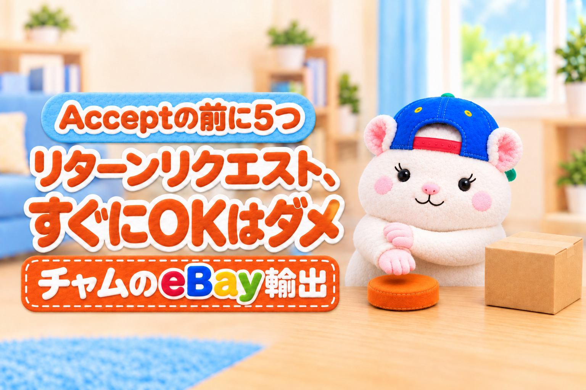

リターンリクエストは、すぐにOKしてはいけません。
Acceptを押す前に、この5つを順番に見ます。
- 返品ポリシーを確かめる
- 理由を聞いて、正しいか確かめる
- シミュレーションする
- シミュレーションをもとに交渉する
- それでもダメなら、承諾する
リターンリクエストが来たら、この記事をAIに読み込ませて、「この順に対応してください」と頼むのがおすすめです。
AIが5つの順番どおりに、確かめることの洗い出しから、試算・買い手への返信の下書きまで進めてくれます。
この記事を書いた人

この記事は、返品の連絡が来たら、まず全額返金・一部返金・返品の3つを試算してから返事をしてきたチャムが書いています。
すぐにOKすると損する2つの理由
| 損の種類 | 中身 |
|---|---|
| 利益 | 往復の送料・返送のときの関税・送る間の故障・売りものにならない・すり替え・クレカの手数料 |
| アカウントヘルス | 返品の理由によっては、ストアの成績に記録が残る |
利益: 1回の返品で、送料と関税が2回かかる
輸出の返品は、国内の返品よりずっと高くつきます。
- 行きの送料に加えて、帰りの国際送料もかかる
- 戻ってくる荷物の関税・通関の費用は、セラーが払う
- 機械類は、輸送のたびに故障のリスクがある(往復で2倍のリスク)
- 戻ってきたときに、動いていた品がジャンク品になっていることもある
- 送った品とはちがう物に、すり替えて送り返されることもある
- 返金のお金がeBayの中に足りないと、クレジットカードで払うことになり、為替の手数料もかかる
すり替えは、本当にあります。
例えば、ぼくの知り合いのセラーは、ブランドバッグの返品を受けて箱を開けたら、空のペットボトルが数本入っていただけでした。
もっと気づきにくいのは、同じ商品での入れかえです。
自分の持っている品が壊れたので、同じ商品をeBayで買い、壊れた自分の品のほうを「動かない」と返品する、という形です。
見た目は同じなので、シリアル番号を見ないと分かりません。
つまり、売れたときの利益どころか、売値より多く損をすることがあります。
アカウントヘルス: 理由によっては成績に残る
返品そのものは、ディフェクト(取引の不良)にはなりません。
でも、気をつけたい記録が2つあります。
- 「Doesn't match description or photos(説明・写真とちがう)」などの理由の返品の割合: 同じカテゴリのセラーより多いと、販売手数料が上がることがある
- eBayが間に入って閉じたケース: 返事をしないと、eBayが判断して、ディフェクトとして記録に残る
リターンリクエストには、3営業日以内に返事をします。
放っておくと、買い手が頼まなくても、eBayが間に入ることがあります。
なので、返品は「OKを押して終わり」でも「放っておく」でもなく、中身を見てから返事をします。
1. 返品ポリシーを確かめる
まず、あなたのストアの返品ポリシーを見ます。
- 返品を受け付けているか(返品不可=No returnsにしているか)
- 返品を受け付ける期間は何日か
- 返品の送料は、だれが払う設定か
返品不可の商品や、期間を過ぎたリクエストなら、そのことをていねいに伝えます。
ただし、買い手が選んだ理由が次のときは、返品不可(No returns)にしていても、eBayの補償(eBay Money Back Guarantee)で返品を受けることになります。
- Doesn't match description or photos(説明・写真とちがう)
- Doesn't work or defective(動かない・不良)
- Arrived damaged(届いたときに壊れていた)
- Missing parts or pieces(部品が足りない)
- Wrong item sent(ちがう品が届いた)
このときの返送の送料も、セラーが払います。
ポリシーだけで断れるのは、「Changed my mind(気が変わった)」「Found a better price(ほかでもっと安く見つけた)」などの買い手の都合のときです。
だからこそ、次の「理由」の確認が大事になります。
2. 理由を聞いて、正しいか確かめる
次に、なぜ返品したいのかを聞きます。
ここで、返品にしなくても済むものをつぶします。
- 対応できること(部品が足りない・設定のしかたが分からない)
- 勘違いしていること(サイズ・型番・対応する機種や規格のちがい)
- まちがった使い方(つなぎ方・設定・組み合わせ)
「動かない」という連絡でも、使い方を聞くと、つなぎ方や設定のまちがいだったということがあります。
その場合は、返品ではなく、使い方の説明で終わります。
場合によっては、理由が正しいかを確かめる
正直に言うと、国をこえての取引では、言ったもん勝ちになることも多いのが事実です。
「Arrived damaged」や「Doesn't work or defective」を選べば、返品や返金が通りやすいからです。
中には、ふっかけてくる買い手もいます。
なので、理由があいまいなときは、画像や動画を送ってもらいます。
- 壊れている所の写真
- シリアル番号が映った状態で、動かないところの動画
- 使っている状態(つなぎ方・設定)の写真
ただし、eBayのメッセージでは動画を送れません(送れるのは写真だけ)。
動画は、Google DriveかYouTube(限定公開)に上げてもらい、そのリンクをeBayのメッセージで送ってもらいます。
証拠を見れば、本当に壊れているのか、使い方の問題なのかが分かります。
買い手に送る義務はないので、「原因を確かめて、いちばん早く解決したいので」と、ていねいにお願いします。
それでも理由がうそだと思うときは、eBayに間に入ってもらうよう頼めます。
返品のしくみを悪用する買い手は、eBayに報告もできます。
3. シミュレーションする
理由が正しいと分かったら、返事をする前に、お金の計算をします。
見るのは、この3つです。
| 選択肢 | 商品の返送 | 見ること |
|---|---|---|
| 一部返金 | なし(そのまま使ってもらう) | 何%なら納得してもらえるか |
| 全額返金・返送なし | なし(そのままあげる) | 売値がまるごと損になる |
| 全額返金・返送あり | あり | 返送の送料・関税・再販でいくら戻るか |
返送してもらうときは、さらに「戻ってきた商品が、いくらで売れるか」を考えます。
- eBayでもう一度売る
- 国内で売る
- 壊れていた品なら、商品の価値はもう下がっている
ここを見ないで返送を選ぶと、送料をかけて取り戻した品が、ほとんどお金にならないことがあります。
例えば、ぼくのストアで、$379で売れた商品に「動かない」と連絡が来たときの試算はこうでした。
| 選択肢 | 損の目安 |
|---|---|
| 全額返金(返送なし) | 約4.6万円 |
| 返品して、仕入れ先の保証に乗せる | 約2.2万円 |
| 一部返金30% | 約1.2万円 |
同じ「返品の連絡」でも、選び方で損が4倍ちがいます。
ぼくのストアでは、この計算をAIに任せています。
返品の連絡が来ると、AIが3つの選択肢の損益と、買い手への返信の下書きまで作ります。
ぼくがやるのは、どれにするかを決めることだけです。
ぼくは、eBay Japanに書面で確認した範囲(公式のAPIを使う・買い手の個人情報をAIに渡さない)でAIを使っています。
AIをどこまで使うかは、eBayの規約を確かめたうえで、ご自身の責任でお願いします。
4. シミュレーションをもとに交渉する
計算ができたら、買い手に選択肢を出します。
いちばんおすすめなのは、一部返金です。
- 買い手は、商品を手元に残したまま、お金の一部が戻る
- セラーは、往復の送料と関税を払わずに済む
一部返金の幅は、シミュレーションの数字から決めます。
「返品にしたときの損」より安ければ、セラーにとっては得です。
その範囲の中で、まず小さめの%から出して、買い手の返事を見ます。
選択肢を2つ出すと、買い手が自分で決めるので、あとから話がこじれにくくなります。
「一部返金◯% か、返品して全額返金か、どちらがいいですか？」の形です。
一部返金は、リターンリクエストの画面から出せます。
ただし、画面から出せる一部返金のオファーは1回だけです。
先にメッセージで買い手と%をすり合わせてから、オファーを出すと失敗しません。
5. それでもダメなら、承諾する
一部返金で話がまとまらなければ、そこからは争いません。
全額返金にして、リターンリクエストを承諾します。
承諾する前に、商品を返送してもらうかを決めます。
- 返送の送料と関税が、商品の価値より高い → 返送なしで返金する(そのままあげる)
- 戻ってきた商品で取り戻せるお金がある → 返送してもらう
返送してもらうときは、返品のラベルを発行して、買い手に送ります。
自分で手配した運送会社のラベルなら、ラベルと追跡番号をリターンリクエストにアップロードします。
商品が戻ってきたら、状態を確かめて、2営業日以内に返金します(遅れると、eBayが代わりに返金することがあります)。
返金の前に、eBayの中のお金を見ておく
返金のお金は、まずeBayの中にある売上金(Available funds)から引かれます。
足りないときは、登録しているクレジットカードに、足りない分が請求されます。
ここで気をつけたいのが、カードの手数料です。
eBayの請求はドルなので、日本のクレジットカードでは、ほとんどの場合、為替の手数料がかかります。
売上金のマイナスが続くと、アカウントに制限がかかることもあります。
なので、Payoneerへの出金の頻度は、毎日(Daily)にしないのがおすすめです。
eBayも、余裕を持てる月1回(Monthly)か2週に1回(Biweekly)をすすめています。
カードに請求された分は、Payments の All transactions で、種類を Charge にしぼると確かめられます。
すり替えに、そなえておく
返送してもらうときは、すり替えにそなえて、3つやっておきます。
- 送る前に、シリアル番号・型番のラベル・傷の写真を残しておく
- 戻ってきた箱は、開けるところから写真か動画で残す
- 中身がちがったら、返金する前に、写真をそえてeBayに間に入ってもらう
例えば、ぼくのストアでは、高い品の返品は、届いたときにシリアル番号を照らし合わせてから返金することにしています。
「動かない」と言われて、シリアル番号と、動かないところが分かる動画をお願いしたら、そのまま連絡が来なくなったこともありました。
証拠をお願いするだけで、止まる返品もあります。
返品は「負け」ではなく、計算して決める「出費」です。
1件の返品と争って評価を傷つけるほうが、ずっと高くつきます。
ネガティブ評価を付けられたら
返品のあとに、悪い評価(ネガティブフィードバック)を付けられることがあります。
でも、正当な理由があれば、eBayに申し立てると削除してもらえます。
返品まわりで消してもらえるのは、例えばこんなときです。
- 「OKしないと悪い評価を付ける」と、評価をたてにされた
- 返品不可(No returns)の商品で、「Changed my mind」の返品を断った
- eBayが間に入ったケースで、セラーの勝ちで閉じた
申し立ては、取引から90日以内です。
認められると、24時間以内に消えます。
なので、悪い評価がこわくて、なんでもOKする必要はありません。
安心してください🐹
TRS(トップレートセラー)の場合
TRS(Top Rated Seller・成績のいいセラーの印)になると、リターンリクエストのときに使えるセラー保護があります。
例えば、使われた・壊された状態で戻ってきた商品は、返金から差し引ける、といった保護です。
ただし、正当な理由がないのに使っていると、やがてアカウントを停止(バン)されるので気をつけてください。
実際に、そうなった人がぼくの知り合いにもいます。
eBayも、こんなセラーは守らないと書いています。
- うその「Doesn't match description or photos」の返品だと、何度も報告する
- 当てはまらないケースで、一部返金にする
保護は、買い手が本当におかしいときのためのものです。
返品を減らすための近道として使わないようにしましょう。
キャンセルや返金で、返品をよけない
返品の記録が増えるのがいやで、リターンリクエストを通さずに、注文のキャンセルや返金の処理で済ませる人がいます。
でも、これで不具合が起きた人もいます。
| やり方 | 起きること |
|---|---|
| キャンセルで返金する | 発送ずみ・返品の申請ずみの注文は、そもそもキャンセルできない |
| 実態とちがう理由でキャンセルする | 不良をさけるための、まちがった理由は規約違反 |
| リクエストを開いたまま、注文の画面から返金する | リクエストが残り、あとでケースからもう一度返金される(二重の返金) |
| eBayの外で返金する | eBayの外での取引になり、規約違反・補償の外になる |
いちばん多いのは、3つ目の二重の返金です。
注文の画面から返金しても、リターンリクエストは閉じません。
返事のないリクエストとして残り、eBayが間に入って、もう一度返金されてしまいます。
eBayのルールでも、返金はリターンリクエストの中から出す決まりです。
一部返金も全額返金も、リターンリクエストの画面から出しましょう。
まとめ
リターンリクエストが来たら、OKを押す前に、この5つを見ます。
- 返品ポリシーを確かめる → No returns・期間・送料の負担
- 理由を聞いて、正しいか確かめる → 勘違い・使い方のまちがいをつぶす・画像と動画
- シミュレーションする → 一部返金・全額返金・返送のあり/なし・再販の値段
- シミュレーションをもとに交渉する → 一部返金の幅を数字で決める
- それでもダメなら、承諾する → 返送の有無を決めて、ラベルを送る・返金の前に売上金の残りを見る
あなたのストアに、いま届いているリターンリクエストはありませんか？
OKを押す前に、この記事をAIに読み込ませて、「この順に対応してください」と頼んでみてください。
AIに渡すのは、リクエストの理由・メッセージ・売値・送料・仕入れ値などの数字までにして、買い手の名前や住所などの個人情報は渡さないでください。
AIをどこまで使うかは、eBayの規約を確かめたうえで、ご自身の責任でお願いします。
▼中の人🏠(レンタルスペース23部屋・売上1.5億)のレンスペ実録

▼ブログ(eBay×レンスペ、全記事まとめ)

▼この店のやり方は、ぜんぶ1冊にまとめてあります
リサーチ・出品・値付け・顧客対応まで、初月利益10万4,286円を出した実店舗の記録と手順を全部書いた教科書です。
読んだその日から、AI社員の作り方をそのまま真似できます。
『AI × eBay輸出の教科書 — 梱包以外、ぜんぶAI』


🎁 2026年10月22日に第3版になりました。顧客対応 完全自動化ツール・ストアドクター・AI自動化コーチなど付録6つは、これまでに買った人も含めて購入者全員に無料で受け取れます。
内容・最新価格は販売ページをご確認ください。